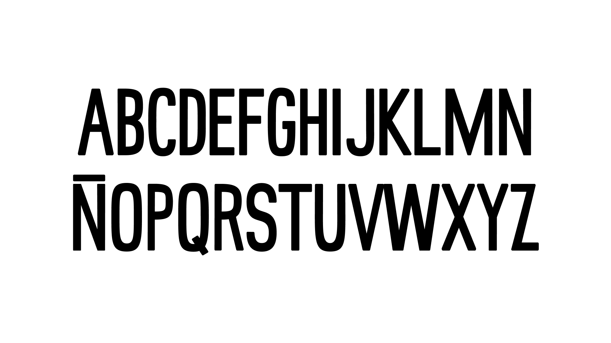
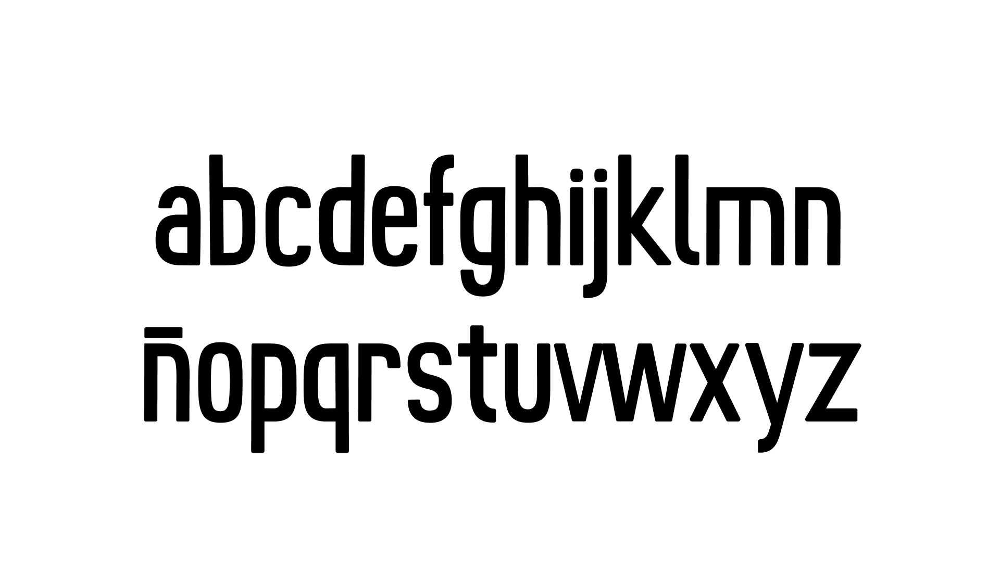
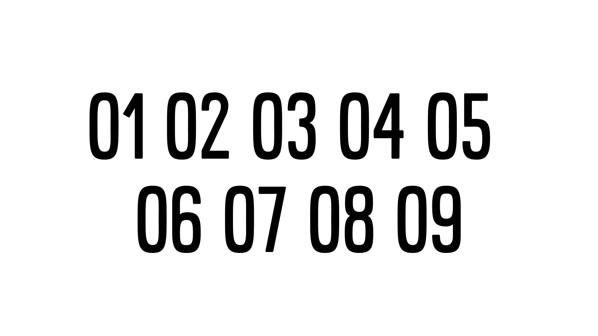
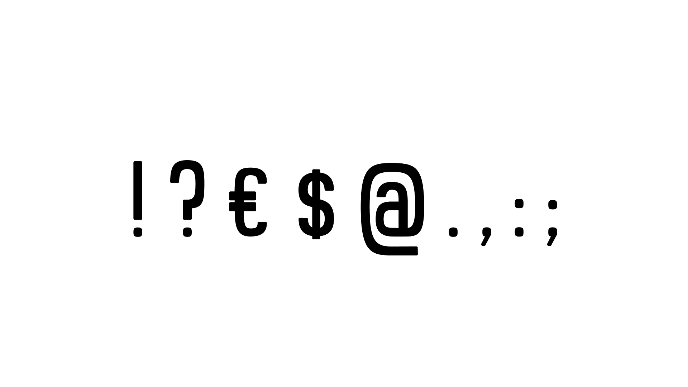
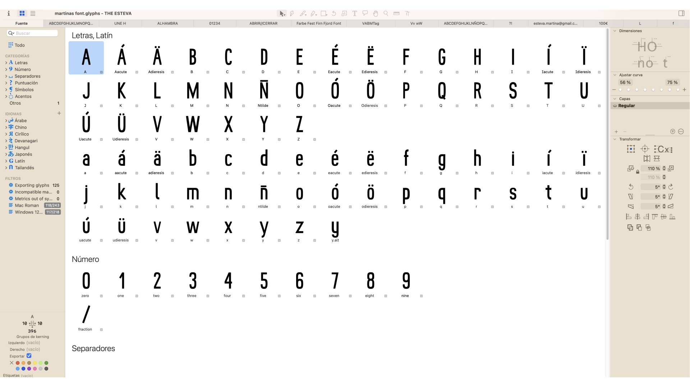

The Esteva Type
The Esteva is a condensed sans serif display typeface, developed as part of a type design project using Glyphs. The design merges vintage influences with a contemporary approach, featuring sharp, clear strokes with a subtle humanistic touch that distinguishes it from traditional geometric typefaces. Its well-balanced structure, with carefully crafted letterforms and optimal spacing, offers both formality and personality.




